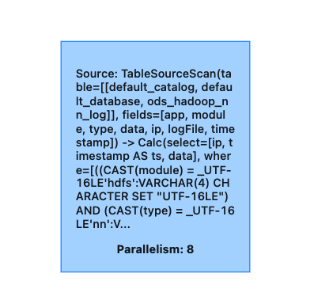
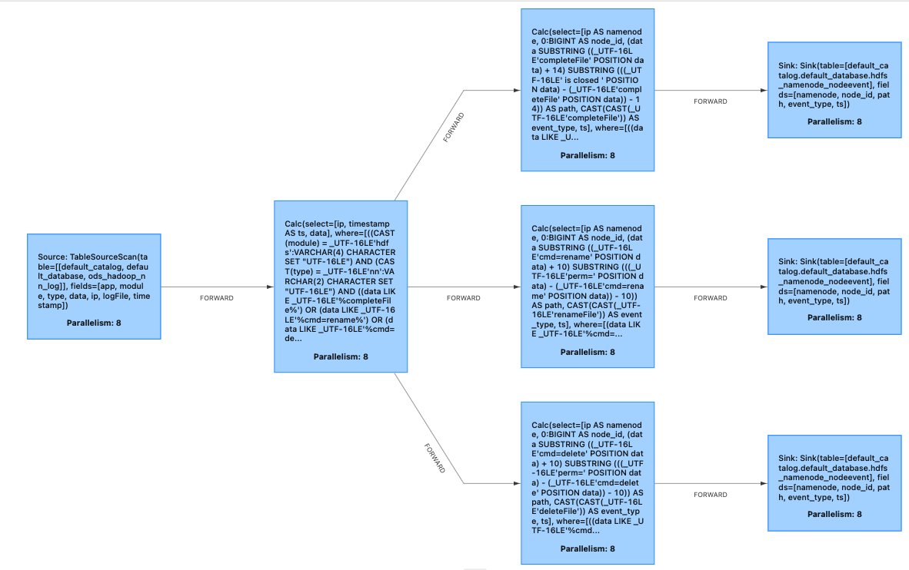
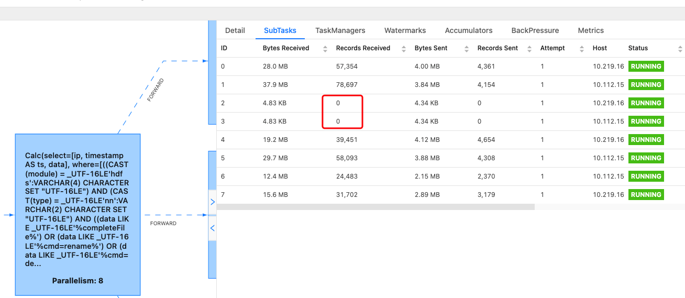
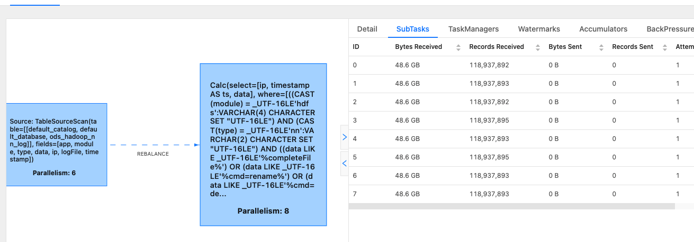

flink单独调整source并行度
单独调整source并行度
当前flink 1.12版本会默认将TableSourceScan算子（从kafka/pulsar/..读取数据）和Calc（反序列化）chain在一起，以降低网络io。在一些特定场景下，比如作业并行度已经调整到和topic分区数一样后仍出现积压，此时只能通过扩topic分区，再扩flink作业并行度来提高整个作业的吞吐。当flink读取那个topic有多个消费者的时候，可能会影响其他的作业，因此比较好的做法是单独设置TableSourceScan的并行度，TableSourceScan将读取的数据rebalance/rescale到下游算子，下游算子可以设置较大的并行度。
可以通过给source table的ddl中添加 source.parallelism=<topic分区数>，调大作业并行度来进行优化。
优化前
针对下面的sql
1 | create view oriData (ip,ts,data) as |
生成的物理执行计划如下：
1 | == Physical Execution Plan == |

可以看到Stage 2后的ship_strategy是FORWARD，并且flink会所有算子都使用默认的并行度，就会将Stage 1和2 chain在一起，而后续都是FORWARD的数据shuffle模式, 所以所有的算子都是chain在一起的，为了更详细的观察每个算子的数据情况，设置set pipeline.operator-chaining=false;
jobGraph变成：


对于每个算子而言，能利用的最大并行度就等于Date Source的topic的分区数。这个就限制了程序后续处理的吞吐。
优化后
自定义并行度，通过在source table的语句里添加source.parallelism参数设置source算子的并行度，调大作业的默认并行度即可。
1 | sailfish扩展的set语法，将source.parallelism添加到r_dataplat.ods_hadoop_nn_log流表的ddl中 |
1 | == Physical Execution Plan == |

具体实现可以参照
PR